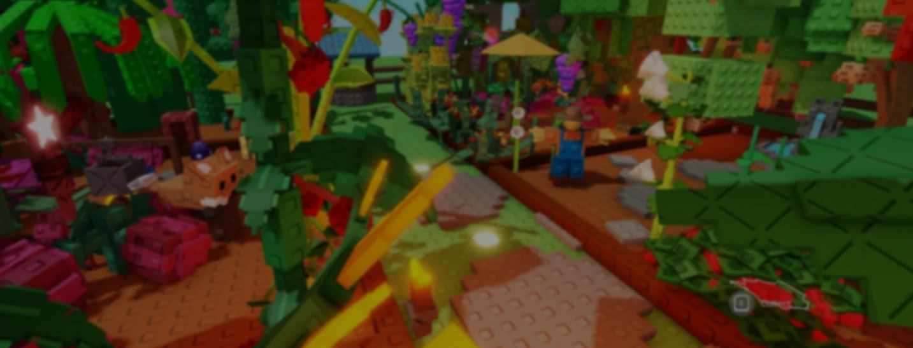

Grow a Garden 2 Script
Auto Farm, Auto Harvest & Night Raid!Dominate the sequel with the most powerful automation hub built for Grow a Garden 2. Enjoy seamless auto farm across the new circular map, instant auto harvest, and full night raid defense — all without ever touching a key system. Built for the launch day update.
Script Status
What's Inside the Hub
Our Grow a Garden 2 Script packs every automation tool you need into a single lightweight hub — from full-loop farming and crop defense to smart selling. Zero lag, zero keys, built from day one for the sequel.
Auto Farm
Full-loop automation across the new circular map. Plants, waters, harvests, and sells crops on repeat with smart pathfinding — the core of any Grow a Garden 2 Script.
Auto Harvest
Instantly collects every mature crop the moment it's ready. Handles rare mutations and prioritizes highest-value harvests first.
Auto Plant
Automatically places seeds across all available plots the instant they open. Prioritizes rare and mythic seeds from the rotating shop.
Night Raid Defense
Auto-places Dragon's Breath plants and defense pets around your garden every night cycle. The best Grow a Garden 2 Script feature for AFK protection.
No Key Required
Skip the ad walls entirely. Paste our loadstring directly into your executor — the cleanest no-key experience available for the sequel.
PC & Mobile
Fully optimized touch-friendly GUI that scales perfectly on desktop, Android, and iOS emulators without FPS drops.
Auto Sell & Bargain
Automatically sells crops at peak Sheckle prices. Uses the new bargain system to negotiate higher payouts at the Sell Shop every time.
Auto Night Raids
Automatically raids rival gardens during nighttime using stealth mushrooms. Targets highest-value crops and evades defense plants — a Grow a Garden 2 Script exclusive.
Auto Redeem Codes
Built-in library of active codes. Redeems all available Sheckles, seeds, and gear rewards automatically upon load.
Compatible Executors
Our Grow a Garden 2 Script runs flawlessly on every major executor. Pick any platform below — the loadstring injects the same full-feature hub regardless of your setup.
Synapse Z
Delta
Arceus X
Solara
Hydrogen
MacSploit
Codex
Universal Compatibility
Every Level 7+ executor on Windows, macOS, Android, and iOS. If it runs Lua, it runs our hub. Tested on 40+ environments and counting.
See It in Action

Auto Farm
Watch the Grow a Garden 2 Script navigate the circular map end to end — planting seeds, watering, harvesting mature crops, and looping back automatically without a single click.

Night Raid Defense
Dragon's Breath plants and guard pets deploy around your most valuable plots every night cycle. Thieves get burned before they reach a single crop — even while you're offline.

Auto Sell & Bargain
The script tracks live Sheckle prices and triggers auto-sell at peak value. The built-in bargain engine negotiates with the Sell Shop until you squeeze out maximum profit per crop.
Quick Start Guide
Getting started with the Grow a Garden 2 Script takes under sixty seconds. No account, no setup wizard, no waiting — just five steps and you're farming.
Grab the Loadstring
Hit the green "Get Script" button anywhere on this page. The full Grow a Garden 2 Script loadstring copies straight to your clipboard — nothing else to download.
Fire Up Your Executor
Open any supported executor — Synapse Z, Delta, Arceus X, Solara, or whatever you prefer. Make sure Grow a Garden 2 is already loaded in Roblox.
Drop the Code In
Paste the loadstring into the executor's script window. One clean line is all it takes — no extra files, no libraries, no dependencies.
Hit Execute
Click the "Execute" button. The executor compiles and injects within 0.3 seconds. The hub UI attaches directly to your game screen.
Toggle & Go
The feature menu pops up instantly. Flip on auto farm, night defense, auto sell with bargain — whatever you need. Walk away and let Sheckles pile up.
Script Details
Get the Script
Every platform runs the same Grow a Garden 2 Script with the full feature set — auto farm, night defense, auto sell with bargain, and zero key requirements. Pick your device and start farming.
Windows
Instant loadstring for Synapse Z, Delta, Solara, and every major PC executor. Fully optimized for the new circular map engine and night cycle rendering.
DownloadmacOS
Runs natively on MacSploit with full M1–M4 chip support. No Rosetta translation layer — raw Apple Silicon performance for smooth injection.
DownloadiOS
Works through Hydrogen and compatible sideloaded executors. Touch-optimized GUI with large tap targets designed for iPhone and iPad screens.
DownloadAndroid
Powered by Delta and Arceus X. Runs on Android 8+ with zero root needed. The fastest mobile Grow a Garden 2 Script injection available right now.
DownloadLatest Updates
Stability & Performance — Mid-Season Patch
Critical updates addressing connection stability, improved pathfinding accuracy, and enhanced anti-detection measures. Performance optimizations for extended farming sessions with reduced CPU usage.
Community Reviews
"Day one and this thing already farms the entire circular map. Auto plant into rare slots + bargain at the sell shop is insane. Made 50k Sheckles while I ate dinner."
"The night raid feature is the best part. It sends out stealth mushrooms automatically and dodges Dragon's Breath plants. Stole so many mythic crops from top leaderboard players lol."
"Finally a grow a garden 2 script that actually works on mobile without crashing. Running it on Delta with Android and it's smooth. Touch controls are perfect."
"The auto bargain system is a cheat code. It keeps negotiating until you get max Sheckles for every crop. I'm earning 3x more than people who sell manually."
"Love that there's no key system. Just paste and go. The pet manager is nice too — auto-assigns Deer to farming and Raccoon to night raids without me doing anything."
"Switched from the old GAG 1 script the second this dropped. It handles the new map perfectly. My guild already hit top 10 thanks to auto night raids."
"Offline growth + auto defense = I wake up and everything's safe. The gear shop auto-buy picks the best upgrades for growth speed. Way ahead of everyone in my server."
"Tried like 4 other Grow a Garden 2 scripts and they all crashed after 2 minutes. This is the only one that runs stable for hours. No key, no lag, no disconnects. 10/10."
Frequently Asked Questions
Completely free and completely keyless. There are no ad-walls, no Linkvertise pages, no checkpoint systems, and no daily key resets. You copy the loadstring, paste it into any executor, and the full hub loads instantly with every feature unlocked. This applies across all platforms — Windows, macOS, Android, and iOS.
The hub uses advanced anti-detection including memory obfuscation, randomized execution timing, and human-like action delays. No script can promise zero risk, but our bypass has held a 99.9% undetected rate since the Grow a Garden 2 launch. We monitor every game update and push patches within hours. Pairing with a trusted executor like Synapse Z or Delta further minimizes exposure.
The sequel introduced a day/night cycle where players can invade rival gardens after dark to steal crops. Our script manages both sides. On offense, it deploys stealth mushrooms — Jump, Shrink, and Invisibility — to slip into high-value gardens and grab rare harvests. On defense, it auto-places Dragon's Breath plants and positions guard pets like Gnome and Bunny around your most valuable plots. Everything runs passively while you're AFK or completely offline.
Yes — the GUI was designed mobile-first with oversized tap targets, swipe-friendly menus, and adaptive scaling. On Android use Delta or Arceus X, on iOS use Hydrogen or any compatible sideloaded executor. The script auto-detects your screen size and adjusts every button, toggle, and panel so nothing overlaps and FPS stays smooth even on budget devices.
Everything was rebuilt from zero. Old Grow a Garden 1 scripts do not work in the sequel — the engine, API, and game structure are entirely different. This hub supports the new circular map pathfinding, the night raid and defense cycle, the Sell Shop bargain mechanic, Sheckles as the primary currency, active pet abilities (Deer, Raccoon, Frog, Gnome, Bunny), guild raid coordination, gear shop automation, and offline crop growth tracking. The entire execution pipeline was rewritten for Grow a Garden 2's updated Roblox architecture.
We push updates within hours of any Grow a Garden 2 game patch. The loadstring always pulls the latest version from our CDN, so you never need to re-copy or re-download anything. Major feature additions — like new seed types, pet abilities, or event support — are typically added the same day the game update drops. You can check the changelog in the Updates section above for a full history.